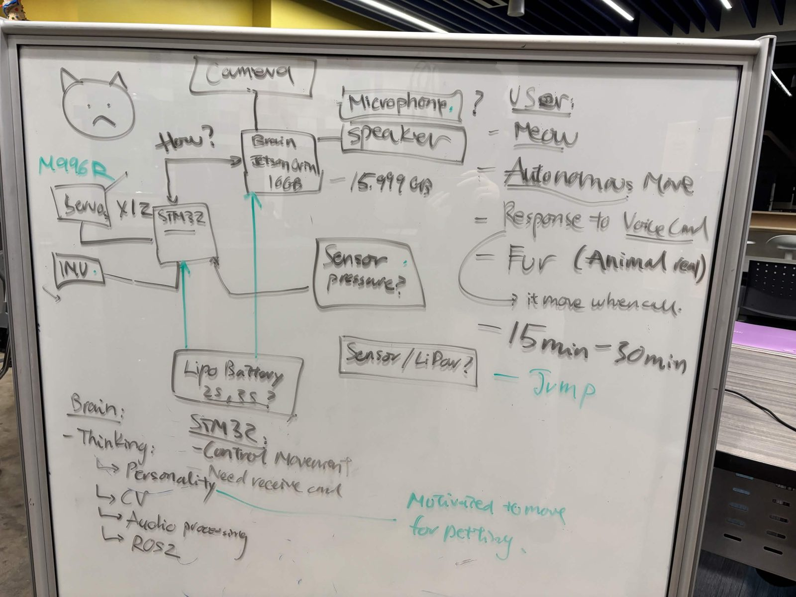

// robotics · on-device ai
Just startedA four-legged robot cat built by a team of 8. I'm on the software team, and I've been assigned to train and run the cat's on-device AI model for voice interaction on a Jetson Orin NX.

Train and run a voice model that fits on the Jetson alongside everything else the cat needs to run, so it can respond to people without a cloud connection.
Looking at how robot pets like Sony aibo and Anki Cozmo pick their behaviors, to help shape how the cat's personality works.
More here as the work happens.
From the team's planning board: a Jetson Orin "brain" handles thinking, personality, computer vision, audio processing, and ROS2, while an STM32 controls movement for 12 servos with an IMU. The camera, microphone, and speaker connect to the Jetson. The goals: meow, move on its own, respond to voice commands, come when called, and feel like a real animal for 15 to 30 minutes per charge.
> previous_prototype.mp4 // 16 s
The team's previous prototype walking on its 12 leg servos. This year's build adds the Jetson brain, camera, and voice, and my part, the voice model, runs on that Jetson.